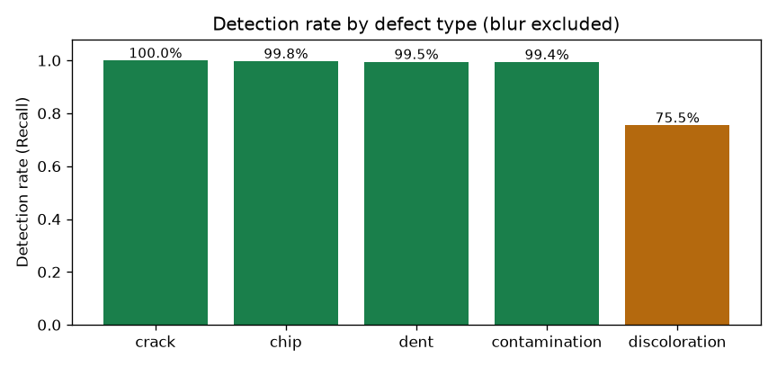
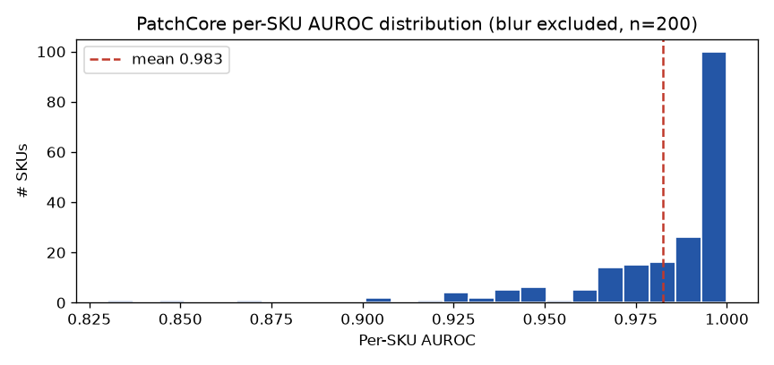
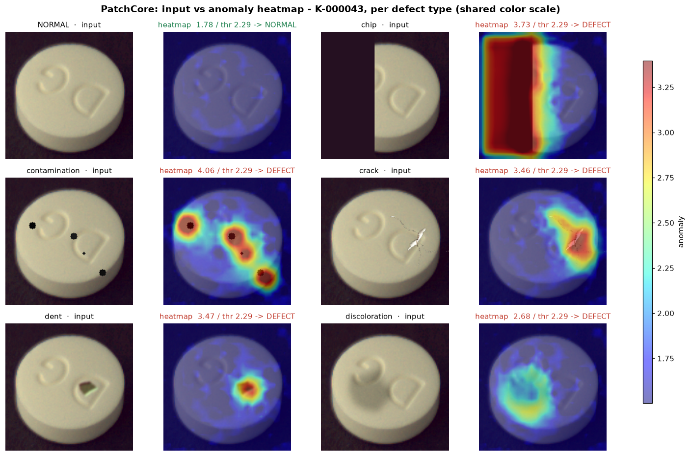
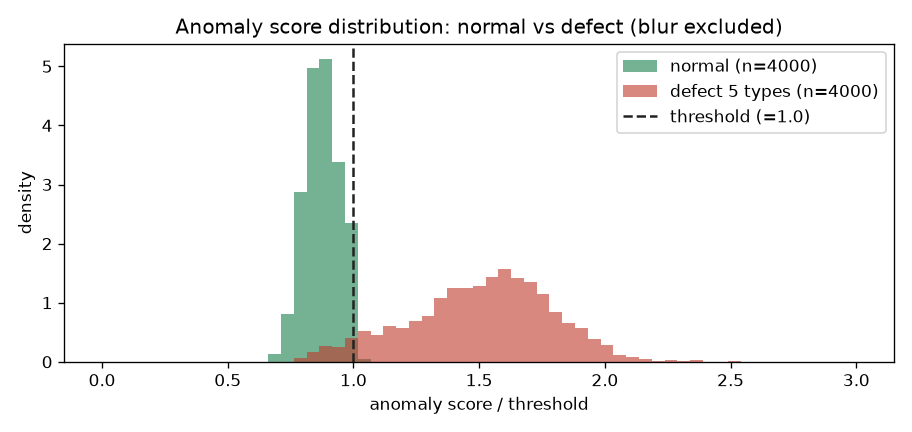
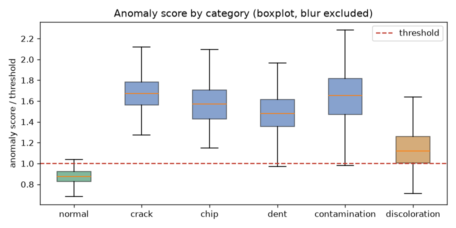
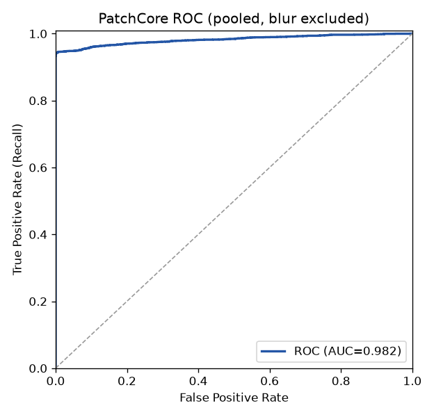
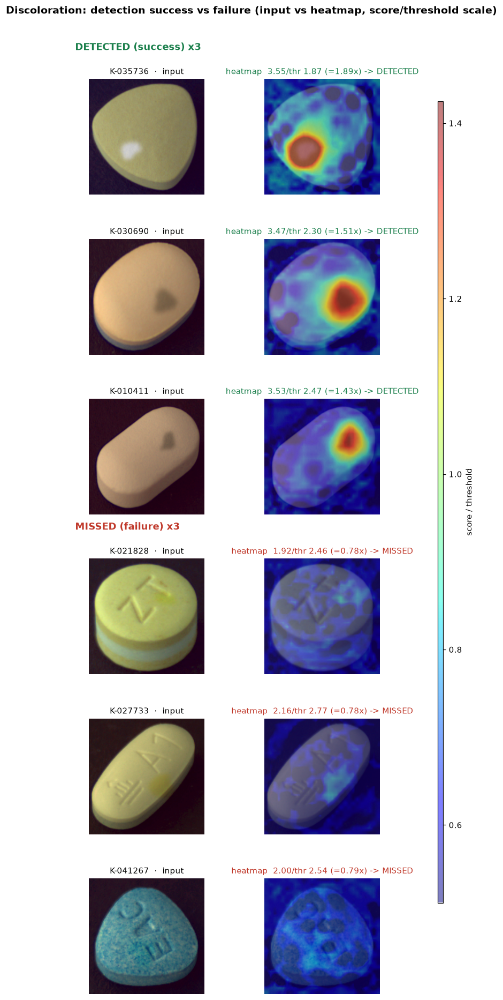
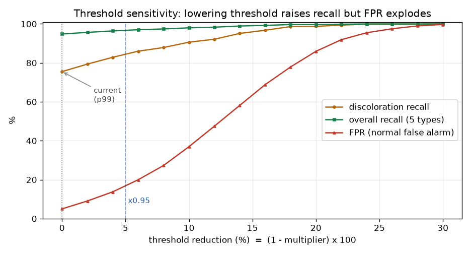

2단계 캐스케이드(YOLO 약종 식별 → 약종별 PatchCore 이상탐지) · 200종 SKU · 평가 GPU: NVIDIA L4 · 불량 정의에서 blur(흐림)는 촬영 아티팩트로 제외
경구 알약 이미지를 입력받아 ① 어떤 약인지 식별하고 ② 정상/불량을 판정하는 2단계 파이프라인을 200종 약품 전체로 학습·평가하였다. 핵심 목적은 정상 데이터만으로 학습하는 이상탐지(PatchCore)가 합성으로 생성한 불량을 실제로 탐지하는지를 정량 검증하는 것이다.
불량 정의: 생성 결함 6종 중 blur(흐림)는 제품 결함이 아니라 촬영 품질 문제이므로 불량 지표에서 제외하고, 실질 불량 5종(깨짐·오염·균열·눌림·변색)으로 정확도를 산출한다.
출처는 경구약제 스튜디오 촬영 이미지(손바닥 위 단일 정제, 약 위치 bounding box 포함)이며, 정상 이미지를 바탕으로 결함을 합성하여 불량 데이터를 생성하였다.
| 항목 | 내용 |
|---|---|
| 약종(SKU) 수 | 200종 (식별자 K-xxxxxx, 약품명은 별도 매핑) |
| 약종당 이미지 | 124장 = 정상 100 + 합성 결함 24(6종×4) |
| 전체 이미지 | 24,800장 (정상 20,000 + 결함 4,800) |
| 분석 대상 불량 | 5종 4,000장 (blur 800장은 불량에서 제외) |
| 형식 / ROI | PNG, 약 위치 bbox=[x,y,w,h] 제공(이상탐지 ROI 크롭에 사용) |
| 컬럼 | 의미 |
|---|---|
drug_N | 약종 코드(SKU) = 분류 라벨 |
file_name / defect_type | 파일명(불량은 접미사 _crack 등) / 정상·결함 유형 |
label | 불량 여부(True/False) |
bbox / dl_name | 알약 영역 좌표 / 사람이 읽는 약품명 |
핵심 원칙: PatchCore는 정상만 메모리에 담는 one-class 방식이므로 불량은 평가에만 사용한다.
| 모델 | 학습(train) | 평가(test) |
|---|---|---|
| YOLO 식별기 | 정상 이미지(검출 학습) | 전체 이미지의 약종 식별 정확도 |
| PatchCore (약종별 200개) | 약종당 정상 80장 → 메모리뱅크 | 약종당 정상 20장(오탐) + 불량(탐지율) |
정상 80:20 분할 seed 42, ROI(bbox) 크롭 후 입력.
| 항목 | 설정 |
|---|---|
| 모델 | YOLO11n (detection) — 사전학습 yolo11n.pt에서 200클래스(SKU) 파인튜닝 |
| 입력 / 에폭 | imgsz 640 / 50 epochs |
| 출력 | 알약 bbox + 클래스(=SKU 코드). 최고 신뢰도 박스를 약종으로 채택 |
학습 검증 지표: Precision 0.995 · Recall 0.997 · mAP@0.5 0.995 · mAP@0.5:0.95 0.991.
| 대상 | 성공 / 전체 | 정확도 |
|---|---|---|
| 정상 이미지 식별 (Top-1) | 19,995 / 20,000 | 99.98% |
| 불량 이미지 식별 유지 (5종) | 3,996 / 4,000 | 99.90% |
| 전체 식별 | 23,991 / 24,000 | 99.96% |
합성 결함을 입혀도 약종 식별이 거의 그대로 유지(99.9%)되어, 생성 불량이 약의 시각적 정체성을 보존함을 확인.
주의: 테스트 정상이 YOLO 학습 이미지와 겹칠 수 있어 정상 Top-1(99.98%)은 다소 낙관적일 수 있다. 불량 이미지는 학습에 미사용 → 불량 식별 유지율(99.9%)은 신뢰 가능한 강건성 지표.
그래디언트 학습이 없는 메모리 기반 one-class 이상탐지이다.
| 단계 | 내용 |
|---|---|
| 특징 추출 | WideResNet50-2(ImageNet 사전학습, 동결)의 layer2+layer3 패치 특징 (역전파 없음) |
| 입력 | bbox로 알약 ROI 크롭 → 배경 변동 제거 |
| 메모리뱅크 | 정상 80장 패치를 coreset(k-center greedy, 0.04)로 추려 약종당 2,509 패치 저장 |
| 이상점수 / 임계값 | 입력 패치의 뱅크 최소거리 중 최댓값 / 약종별 정상 val 점수 p99 |
| 산출물 | 약종별 <SKU>.npz(뱅크+임계값) × 200 |


| 유형 | 탐지 / 전체 | 탐지율 |
|---|---|---|
| crack (균열) | 800 / 800 | 100.0% |
| chip (깨짐) | 798 / 800 | 99.8% |
| dent (눌림) | 796 / 800 | 99.5% |
| contamination (오염) | 795 / 800 | 99.4% |
| discoloration (변색) | 604 / 800 | 75.5% |
| 합계(5종) | 3,793 / 4,000 | 94.8% |




| SKU | AUROC | SKU | AUROC |
|---|---|---|---|
| K-041267 | 0.835 | K-027777 | 0.890 |
| K-027733 | 0.856 | K-010411 | 0.912 |
| K-031090 | 0.869 | K-022412 | 0.915 |
| K-021828 | 0.871 | K-008901 | 0.917 |
| K-038290 | 0.875 | K-029644 | 0.919 |
추가 정상 데이터 확보 또는 결함 생성 방식 보완의 우선 후보.

변색 미탐(75.5%)을 줄이기 위해 약종별 임계값(정상 val p99, 평균 2.26)을 일괄 인하했을 때의 영향을 분석했다.
| 임계값 | FPR(정상 오탐) | 변색 Recall | 전체 Recall | 오탐 건수/4,000 |
|---|---|---|---|---|
| ×1.00 (현재) | 5.0% | 75.5% | 94.8% | 200 |
| ×0.95 (−5%) | 16.9% | 84.1% | 96.7% | 675 |
| ×0.90 (−10%) | 37.0% | 90.6% | 98.0% | 1,478 |
| ×0.80 (−20%) | 85.9% | 98.8% | 99.7% | 3,437 |

입력 → YOLO 약종 식별 → 해당 약종 PatchCore 판정 전 과정 적용(정상 20,000 + 불량 5종 4,000):
| 실제 \ 판정 | 정상 | 불량 | 검토 | 합계 |
|---|---|---|---|---|
| 정상 | 19,799 | 201 | 0 | 20,000 |
| 불량(5종) | ~202 | 3,792 | ~6 | 4,000 |
주의: E2E 정상은 메모리뱅크 학습에 쓰인 정상(약종당 80장)을 포함하므로 오탐 1.0%는 낙관적이다. 공정한 오탐율은 §4.2의 held-out 기준 5.0%(200/4,000)로 본다.
200종 전체에서 약종 식별 99.96%, 이상탐지 평균 AUROC 0.982 · 불량 탐지율 94.8%(blur 제외)를 달성하였다. 합성 불량은 약종 식별을 해치지 않으면서(식별 유지 99.9%) 평균 AUROC 0.98 수준으로 탐지 가능함이 정량 확인되어, 불량 데이터 생성 방식의 유효성이 입증되었다. 형태 결함(균열·깨짐·눌림·오염)은 99% 이상 탐지하며, 변색과 임계값 캘리브레이션이 향후 보완 과제로 남는다.
§4.6에서 보듯 임계값 인하만으로는 변색을 못 잡으므로, 신호 자체를 키우는 접근이 필요하다. 비용 대비 효과순:
| 우선 | 방법 | 설명 / 기대효과 | 비용 |
|---|---|---|---|
| 1 | 색 특징 추가 | WideResNet 특징(질감 위주)은 색에 둔감 → LAB/HSV 색·채도 통계를 패치 특징에 결합해 변색 신호 강화. 학습 불필요 | 낮음 |
| 2 | 정상 색 프로파일 대조 | 약종별 정상 평균 색 대비 편차맵을 별도 산출해 PatchCore 점수와 융합 | 낮음 |
| 3 | 정상 데이터 확충 | 약종당 정상 수↑ → 뱅크·임계값 안정화(현재 FPR 5%→1% 목표). 약점 SKU 우선 | 중간 |
| 4 | 특징추출기 도메인 적응 | WideResNet을 알약 이미지로 자기지도 미세조정 → 색·미세결함 민감도↑ (이것이 "더 학습") | 중간 |
| 5 | 합성 변색 지도학습 | 보유한 합성 변색을 양성으로 쓰는 보조 분류기/세그멘테이션. 변색 특화 탐지 (단 합성 스타일 과적합 주의) | 중간 |
| 6 | review 밴드 | 경계 부근 점수는 합/불 대신 "검토"로 분기 → 오탐·미탐 동시 완화(운영 보완) | 낮음 |
"학습을 더?" — PatchCore 자체는 역전파 학습이 없어 "더 학습"의 대상이 아니다(정상 패치 저장량만 늘 뿐). 실효적 추가 학습은 ④ 특징추출기 도메인 적응 또는 ⑤ 합성 변색 지도학습이며, 그 전에 ①② 색 특징 보강(무학습)이 가장 가성비가 높다.
그 외: 실제 불량 샘플 확보로 합성 검증 교차검증, 이미지당 지연시간 측정.
| 식별 모델 | YOLO11n detection, imgsz 640, 50 epochs, 200 classes |
| 이상탐지 | PatchCore, WideResNet50-2(frozen) layer2+3, ROI crop, coreset 0.04(뱅크 2,509 패치), 임계값 p99 |
| 분할/시드 | 정상 80:20, seed 42 · 불량 정의에서 blur 제외 |
| 평가 환경 | GCP NVIDIA L4 GPU, torch 2.9(CUDA) |
| 산출물 | PatchCore 뱅크 200개(.npz), metrics_200.json, patchcore_scores.json, figures/ |
수치 출처: metrics_200.json + patchcore_scores.json 집계(blur 제외 재계산). 그림: figures/.